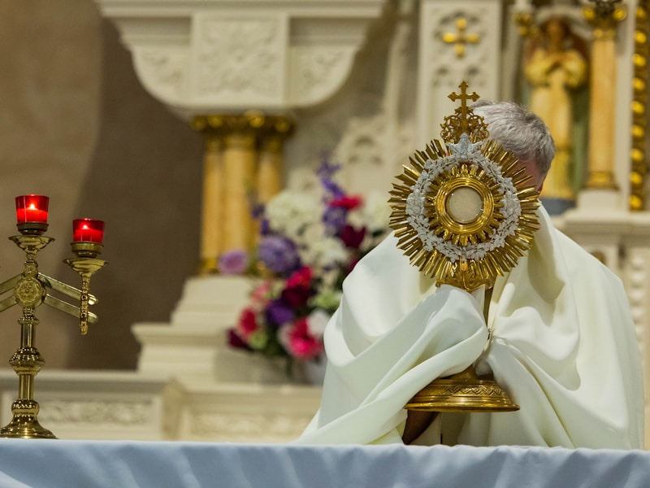
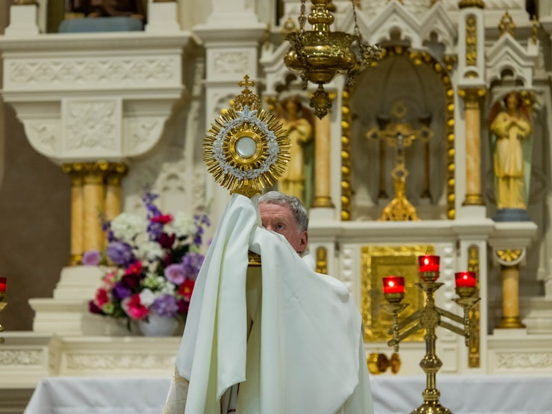
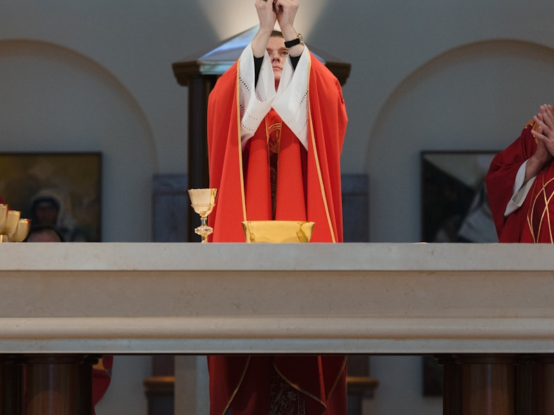
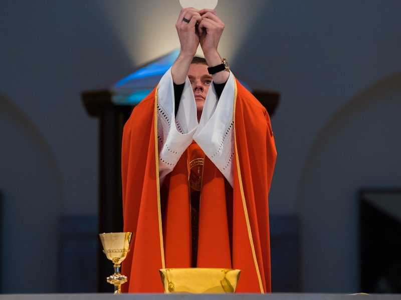
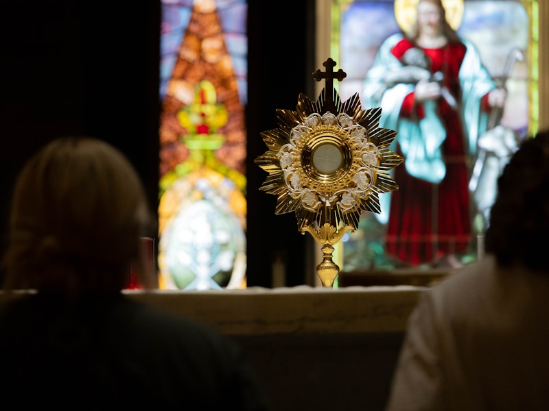

A Paróquia Nossa Senhora dos Remédios nasceu junto com a própria cidade de Jericó. Por volta de 1870, o fazendeiro Alexandre Matias de Melo doou um terreno para a construção de uma igreja em honra à Nossa Senhora dos Remédios. Ao redor dela foram sendo construídas as primeiras casas, dando origem ao povoado que depois se tornaria a cidade de Jericó.
O município passou por diversos nomes antes de ser chamado Jericó: Quixó Penoso, Caipora e Itacambá. Sua emancipação política ocorreu em 8 de maio de 1959. Pertencemos à Diocese de Cajazeiras — erigida em 6 de fevereiro de 1914 pelo Papa Pio X pela bula Maius Catholicae Religionis Incrementum — e integramos a Forania de Catolé do Rocha, que abrange 8 municípios da região.
A Paróquia Nossa Senhora dos Remédios de Jericó-PB tem como missão central evangelizar, celebrar os sacramentos com fervor e promover a caridade cristã. Pertencemos à Diocese de Cajazeiras e nos comprometemos a ser presença viva de Cristo no sertão paraibano, acolhendo a todos com amor fraterno.

Nossa visão é ser uma paróquia que anuncia o Evangelho com entusiasmo, celebra os sacramentos com fervor e é presença solidária para com os mais necessitados de Jericó e região. Queremos ser a casa de todos os que buscam a Deus, onde cada pessoa é acolhida com o amor de Nossa Senhora dos Remédios.

Nossa missão é evangelizar, celebrar os sacramentos e servir. Acolhemos todos que chegam com fardo pesado, oferecendo consolo, formação cristã e a certeza de que em Nossa Senhora dos Remédios encontramos a intercessora poderosa que leva nossas penas ao Filho.

Nossa abordagem é pastoralmente integral: cuidamos da liturgia, da catequese, das pastorais sociais e da formação de lideranças. Inspirados pela devoção à Nossa Senhora dos Remédios, acreditamos que cada pessoa pode ser instrumento de cura e esperança para o próximo, como Nossa Senhora foi para os prisioneiros libertados pela Ordem da Santíssima Trindade.

Fundada por volta de 1870, quando Alexandre Matias de Melo doou o terreno para a primeira igreja da cidade.
A Diocese de Cajazeiras, erigida em 1914 pelo Papa Pio X, conta com 61 paróquias distribuidas pelo sertão.
Jericó integra a Forania de Catolé do Rocha, que abrange 8 municípios da região do sertão paraibano.
A Diocese de Cajazeiras tem aproximadamente 95% de católicos em seu território de 14.867 km² no sertão.
Missas diárias e dominicais, festas do calendário litúrgico e a grande Festa da Padroeira (8 de setembro) que reúne toda a comunidade jericoense.
Preparação para os sacramentos (batismo, eucaristia, crisma e matrimônio), grupos bíblicos e formação cristã para todas as idades.
Ações solidárias para apoiar os mais necessitados da comunidade de Jericó e região, vivendo o mandamento do amor ao próximo.

Pároco da Paroquia

responsável pela catequese

coordenadora da pastoral da juventude

coordenadora das obras sociais e caridade
A fé é o alicerce de tudo que fazemos. Ela nos orienta nas decisões, sustenta nos momentos difíceis e nos une como povo de Deus.
Demonstramos o amor por meio do serviço compassivo, do acolhimento fraterno e de práticas comunitárias que incluem e dignificam cada pessoa.
A comunidade cresce por meio de grupos de oração, encontros formativos, celebrações e pelo cuidado mútuo entre os paroquianos.
O crescimento espiritual nos ajuda a aprofundar a relação com Deus, fortalecer a vida de oração e discernir a vontade de Deus em cada etapa da vida.
valores guiam cada evento, celebração e serviço pastoral, garantindo que tudo seja feito com amor, respeito e comprometimento com o Evangelho.